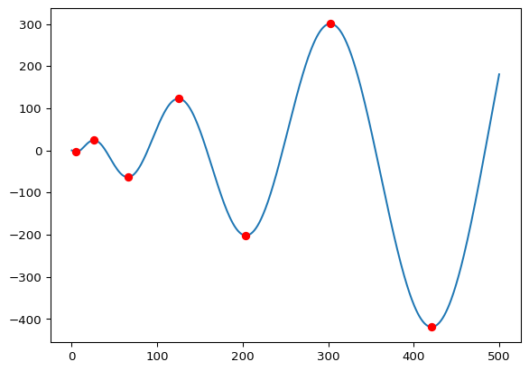
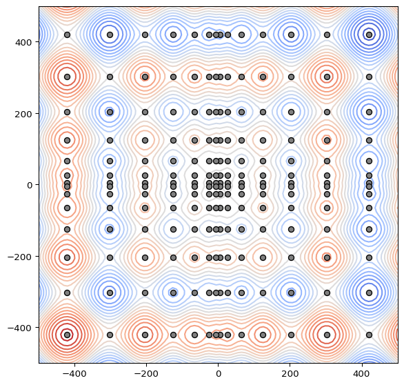

Many optimization algorithms, especially in differential evolution and swarm intelligence, test their performance on a bunch of standard objective functions. Most of these functions are either straightforward (such as the spherical function, which is just the distance to the origin) or very well known (such as the Rastrigin function, which has its own Wikipedia page).
One function that stands out as being both somewhat mysterious and not easy to reason about right away is the Schwefel function. The form that is usually described in the literature has these weird constants in it, and the location of the global minimum likewise is also given numerically as \(x_1 = \cdots = x_n = 420.9687\)), to limited precision. This made me curious: what’s up with the Schwefel function? Where did it come from? Can we be more precise about the location of its minima?
Mathematical description
The Schwefel function is given by \[
F(x) = - \sum_{i = 1}^N x_i \sin \sqrt{|x_i|}.
\] Some references add \(418.9829N\) to this expression, so that the global minimum has function value roughly equal to zero. I won’t do that, but I’ll just accept that the function changes with increasing \(N\).
Usually, the Schwefel function is enclosed in a box centered on the origin, of 1000 units on each side, i.e. \(-500 \le x_i \le 500\) for all \(i = 1, \ldots, N\). The function has many local minima, as well as one global minimum at \(x_1 = \cdots = x_n = 420.9687\), near the boundary of the domain. This makes it an interesting function to test optimization algorithms on, as it is easy for an algorithm to (a) fail to explore regions near the boundary of the domain, or (b) get stuck in another local minimum.
The Schwefel appears first in a book by (who else) Schwefel from 1977 (see Schwefel 1977, problem 2.3 in A1.2) but this book is not often cited. In fact, Google Scholar gives me no citations until 1991, when the evolutionary computing community picked up on it (Mühlenbein, Schomisch, and Born 1991 is the first reference I could find). Nowadays, it is used without citation, which is somewhat regrettable since it is not a widely known function.
I was interested in finding the exact coordinates of the global minimum, as well as the value of the objective function at that point. To get started, observe that \(F(x)\) is the sum of a bunch of univariate functions: \[
F(x) = f(x_1) + \cdots + f(x_n),
\] where \(f(x) = -x \sin\sqrt{|x|}\). Consequently, the gradient of \(F\) is given by \[
\nabla F = \left[
\begin{matrix}
f'(x_1) \\
\vdots \\
f'(x_n)
\end{matrix}
\right],
\] where \(f'(x)\) is the derivative of \(f(x)\). If we want to find the points where \(\nabla F\) vanishes, we therefore have to find the zeros of \(f'(x)\), and solving a one-dimensional equation (even if it is nonlinear) is of course much easier than solving a system of nonlinear equations.
Finding the minima of \(f(x)\)
To find the zeros of \(f'(x)\), we may assume that \(x > 0\) (the case \(x < 0\) is similar), so that \[
f'(x) = - \sin\sqrt{x} - \frac{\sqrt{x}}{2} \cos \sqrt{x} = 0.
\]
This equation can be rewritten as \[
\tan \sqrt{x} + \frac{\sqrt{x}}{2} = 0,
\] or, by substituting \(y = \sqrt{x}\), as \[
-2\tan y = y.
\] In other words, we are looking for the fixed points of the function \(g(y) = - 2\tan y\). There are a few things to keep in mind, though.
By looking at the graph of \(-2\tan y\), we see that there are many fixed points, and in particular, there is one inside each period of the tangent function. We can therefore parametrize these fixed points as \(y = z + k \pi\), where \(k\) is an integer and \(z \in (-\pi/2, \pi/2)\). It turns out it will be easier to fix \(k\), and look for \(z\) inside one fundamental period of the tangent, by solving \[
\tan z = - \frac{z + k \pi}{2}.
\]
This equation has a unique fixed point, but it is unstable (since \(|g'(y)| > 1\)). To work around this, we take the arctan of both sides to get \[
z = - \arctan\left( \frac{z + k \pi}{2} \right).
\] This gives us a fixed-point equation with a unique fixed point that is stable (attracting), so we can solve this e.g. by fixed-point iteration. Once we have a solution \(z = z_\text{ext}\), the corresponding \(x\) can then be done by putting \[
x_\text{ext} = (z_\text{ext} + k \pi)^2.
\] The fixed-point equation has a few interesting properties:
For \(k > 0\), the solution \(z_\text{ext}\) will be negative: \(z_\text{ext} \in (-\pi/2, 0)\).
As \(k\) increases, \(z_\text{ext}\) will tend towards \(-\pi/2\).
Both of these properties follow from the graph of the arctan function shifted over \(k \pi\) units to the left.
Furthermore, by substituting the expression for the solution back into \(f(x)\) and using these sign properties, we get that \[
f(x_\text{ext}) = (-1)^k x_\text{ext}\sqrt{\frac{x_\text{ext}}{4 + x_\text{ext}}}.
\] In other words, we get an alternating series of minima (for \(k\) odd) and maxima (for \(k\) even), whose magnitude increases with increasing \(k\).
The table below lists the first few zeros of \(f'(x)\), together with the value of \(f(x)\).
Table 1: Extrema and function values for the 1D Schwefel function.
Index
x
f(x)
1
5.23919930
-3.94530163
2
25.87741735
24.08296022
3
65.54786509
-63.63498195
4
124.82935642
122.87617351
5
203.81425265
-201.84321788
6
302.52493561
300.54455266
7
420.96874636
-418.98288727
Code
xs = np.linspace(0, 500, 500)ys = schwefel_1d(xs)plt.plot(xs, ys)plt.plot([item[1] for item in table], [item[2] for item in table],"ro")

Extrema of the 1D Schwefel function.
Extrema of the Schwefel function
This tells us everything we need to know about minima and maxima of \(F\). First of all, we can find all (coordinate-wise positive) extrema of \(F(x)\) by finding all of the zeros of the aforementioned fixed-point equation (see Table 1), and then choosing (with replacement) \(n\) of these zeros and assembling them into a coordinate vector. Each such \(n\)-vector is a zero of \(\nabla F\). In 2D, this gives the distribution of extrema as shown below.
Code
r =500x = np.linspace(-r, r, 100)y = np.linspace(-r, r, 100)X, Y = np.meshgrid(x, y)Z = schwefel(X, Y)plt.figure(figsize=(7, 7))plt.contour(X, Y, Z, levels=20, cmap=cm.coolwarm)extrema = np.asarray([item[1] for item in table])Xext, Yext = np.meshgrid(extrema, extrema)def s(x, y): plt.scatter(x, y, fc='gray', ec='black', zorder=2)s(Xext, Yext)s(Xext, -Yext)s(-Xext, Yext)s(-Xext, -Yext)

Extrema of the 1D Schwefel function.
The remaining question is which of these extrema provides the global minimum. First of all, note that \(F\) being the sum of \(n\) copies of \(f\) tells us that the global minimum must have \(x_1 = \cdots = x_n = x_\text{min}\), with \(x_\text{min}\) the global minimum of \(f(x)\). So we can reduce our \(n\)-dimensional minimization problem to a one-dimensional one, for which we have the fixed point equation.
Secondly, where is \(x_\text{min}\) located? For this, we use the expression for the minima and maxima derived earlier. We need to find the largest odd value for \(k\) such that \(x_\text{ext}\) is still within our domain. Since our domain is limited by \(x = 500\), this gives us \(k = 7\).
Now, we either solve the fixed-point equation for \(k = 7\), or we consult table Table 1. Either way, we get \[
x_\text{ext} = (z_\text{ext} + 7 \pi)^2 \approx 420.96874635998194.
\] This is precisely the value quoted in various sources, to greater accuracy. This approximation is correct to about 8 decimal places (at least), corresponding to the default accuracy of SciPy’s fixed_point solver. A higher-accuracy approximation is given in the next section.
High-precision location of the extremum
Added 2024-01-03.
Using the mpmath library for arbitrary-precision floating point arithmetic, we can find the value for \(x_\text{ext}\) to very high precision, in this case to approximately 50 decimal places. This value can be useful e.g. when calibrating your optimizer.
from mpmath import mpmp.dps =60z = mp.mpf(0)for _ inrange(50):# each iteration gives us 2 decimal places, so a fixed # number of 50 iterations should be more than enough. z =-mp.atan((z +7*mp.pi)/2)x = (z +7*mp.pi)**2print(f"x = {x}")
x = 420.968746359982027311844365018686486001674755877017274182781
With this value for \(x_\text{ext}\), \(f'(x)\) becomes vanishingly small, indicating that we’re indeed right at the extremum.
(Schwefel 1977) has the following approximate expression for the extrema: \[
x_\text{ext} \approx \pm \pi^2\left(\frac{1}{2} + k\right)^2,
\] valid when \(k\) is large. This follows easily from the fixed-point equation: for \(k\) large, \(\arctan\left( \frac{z + k \pi}{2} \right)\) tends to \(-\pi/2\), so that \(z_\text{ext} \approx \pi/2\), and the approximation for \(x_\text{ext}\) follows.
References
Mühlenbein, H., M. Schomisch, and J. Born. 1991. “The Parallel Genetic Algorithm as Function Optimizer.”Parallel Computing 17 (6): 619–32. https://doi.org/10.1016/S0167-8191(05)80052-3.
Schwefel, Hans-Paul. 1977. Numerische Optimierung von Computer-Modellen Mittels Der Evolutionsstrategie. First. Interdisciplinary Systems Research 26. Birkhäuser Basel. https://doi.org/10.1007/978-3-0348-5927-1.